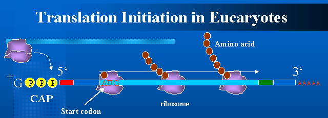

Translation Initiation Process in Eucaryotes
In eucaryotes, ribosome binds to the 5' CAP structure of mRNA. And
then it scans mRNA to find start codon. Usually ribosome initiate
translation at the first encountered AUG triplet.

However, the first AUG
is sometimes skipped and translation is initiated at the second or
third AUG triplet located downstream. This phenomenon is called
leaky scanning. The leaky scanning is known to occur
more frequently in the following cases:
- Nucleotides around AUG are far from the optimal
context. In vertebrates, for example, the optimal context for
proper translation initiation is gccGCC[AG]CCAUGG.
If an AUG triplet is surrounded by a sequence very
different from the optimal context, the leaky scanning is likely to
occur; the positions -3 (purine) and +4 (guanine) are particularly
important.
- Another AUG triplet is located closely after AUG.Various
laboratory experiments.
demonstrated that insertion of another AUG after a start codon often
triggers leaky scanning.
Our earlier study
demonstrated that AUG triplets around start codons have been
negatively selected, presumably because there has been an evolutionary
pressure to avoid leaky scanning.
- A stop codon in the same reading frame is located closely
after AUG. Kozak reported that insertion of
a stop codon in the same reading frame also triggers leaky scanning.
- AUG is too close to CAP structure. Kozak also found that
AUG triplets located very close to the 5' terminus of mRNA are likely
to be a subject to leaky scanning.
References
-
Ding-Fang Yun et al.;
mRNA sequences influencing translation and the selection of AUG
initiator codons in the yeast Saccharomyces cerevisiae,
Mol.Microbiol., 19:1225-1239,1996
- Kozak,M.;
Comparison of initiation of protein synthesis in procaryotes, eucaryotes,
and organelles,
Microbiol.Rev., 47:1-45,1983
- Kozak,M.;Selection of initiation sites by
eucaryotic ribosomes: effect of inserting AUG triplets upstream from
the coding sequence for preproinsuBn, Nuc.Acid.Res.12:3873-3893,1984
- Kozak,M.;
Influences of mRNA secondary structure on initiation by eucaryotic
ribosomes,
Proc.Natl.Acad.Sci.USA, 83:2850-2854,1986
- Kozak,M.;An analysis of 5'-noncoding sequences from
699 vertebrate messenger RNAs, Nuc.Acid.Res., 15:8125-8148, 1987
- Kozak,M.;
Effects of intercistronic length on the efficiency of reinitiation
by eucaryotic ribosomes,
Mol.Cell.Biol., 10:3438-3445,1987
- Kozak,M.;Context Effects and Inefficient Initiation
at Non-AUG Codons in Eucaryotic Cell-Free Translation
Systems, Mol.Cell.Biol., 11:5073-5080,1989
- Kozak,M.;The Scanning Model for Translation:An Update,
J.Cell.Biol., 108:229-241,1989
- Kozak,M.;Downstream secondary structure faciBtates
recognition of initiator codons by eukaryotic ribosomes,
Proc.Natl.Acad.Sci.USA,87:8301-8305,1990
- Kozak,M.;
A short leader sequence impairs the fideBty of initiation by eukaryotic
ribosomes, Gene Expr, 2:111-115,1991
- Kozak,M.;
Regulation of Translation in Eucaryotic Systems,
Annuu.Rev.Cell Biol.8:197-225,1992
- Kozak,M.;Adherence to the first-AUG rule when a
second AUG codon follows closely upon the first,
Proc.Natl.Acad.Sci.USA,92:2662-2666,1995
- WilBams M.A., Lamb R.A.;
Effect of mutations and deletions in a bicistronic mRNA on the
synthesis of influenzae B virus NB and NA
glycoproteins,J.Virol.,63:28-35,1989
- Luukkonen BG et al.;
Efficiency of reinitiation of translation on human immunodeficiency
virus type 1 mRNAs is determined by the length of the upstream open
reading frame and by intercistronic distance,
J.Virol., 69:4086-4094,1995
- Mehdi H. et al.;
Initiation of translation at CUG, GUG and ACG codons in mammaBan
cells,
Gene, 91:173-178,1990
- Saito, R. and Tomita, M.; On Negative Selection
Against ATG Triplets Near Start Codons in Eucaryotic and Procaryotic
Genomes. J.Mol.Evol.(In press)
- Shine,J. and Dalgarno,L.;The 3'-terminal sequence
of Escherichia coB 16S ribosomal RNA:Complementarity to nonsense triplets
and ribosome binding sites. Proc.Nat.Acad.Sci.USA, 71:1342-1346,1974
- Slunsher, L. et al.;mRNA leader length and initiation
codon context determine alternative AUG selection for the yeast gene MOD5,
Proc.Natl.Acad.Sci.USA, 88:9789-9793,1991
Go back to my research page